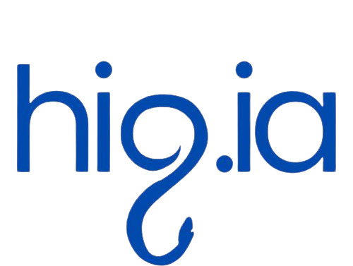

LUMA es una aplicación de apoyo al diagnóstico clínico diseñada para detectar malaria mediante el análisis automatizado de imágenes de frotis sanguíneos. Dirigida a especialistas médicos en Nigeria, LUMA combina inteligencia artificial, visión por computador y un diseño intuitivo para proporcionar resultados rápidos, fiables y accesibles incluso en entornos con recursos limitados.
Introduce la información básica del paciente, como nombre, edad y síntomas relevantes.
Carga una imagen del frotis sanguíneo obtenida con un microscopio. La aplicación procesará automáticamente la muestra.
Gracias a la inteligencia artificial, LUMA analiza la imagen y ofrece un diagnóstico preciso en segundos.
Puedes descargar el documento con las instrucciones detalladas para utilizar LUMA correctamente.
📄 Descargar instrucciones en PDFNuestra herramienta alcanza una precisión del 79,26 %, y una sensibilidad y especificidad del 78 %, lo que garantiza diagnósticos precisos y fiables.

Su diseño intuitivo y acceso offline la hacen altamente práctica para entornos clínicos con recursos limitados.

La herramienta integra tecnología de vanguardia, combinando inteligencia artificial y análisis de imágenes para un diagnóstico preciso y moderno.
500 €/mes
Acceso ilimitado a diagnósticos con inteligencia artificial, actualizaciones automáticas y soporte técnico prioritario.
4800 €/año
Acceso ilimitado a diagnósticos con inteligencia artificial, actualizaciones automáticas y soporte técnico prioritario; con un 20 % de ahorro.